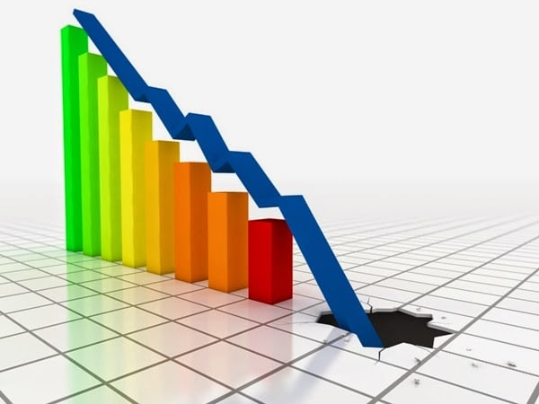

Se utiliza para dar a entender que las inversiones permanentes de la planta han disminuido en
potencial de servicio. En contabilidad, la depreciación es una manera de asignar el coste de
las inversiones a los diferentes ejercicios en los que se produce su uso o disfrute en la
actividad empresarial.

Triangulo de pascal
Es una representación de los coeficientes binomiales ordenados en forma de triángulo.
Es llamado así en honor al filósofo y matemático francés Blaise Pascal, quien introdujo
esta notación en 1654, en su Tratado del triángulo aritmético. Si bien las propiedades y
aplicaciones del triángulo las conocieron matemáticos indios, chinos, persas, alemanes e
italianos antes del triángulo de Pascal, fue Pascal quien desarrolló muchas de sus aplicaciones
y el primero en organizar la información de manera conjunta.
Conversion de numeros a letras
Útil para la contabilidad Hacer cheques pasar Escribir Numeros A Letras da Igual cual
es tu moneda Como Euros , Pesos Argentino , Pesos Mexicanos , Dolares o Bolívares o
Soles Peruanos . Pasar números a texto , tan solo tienes que poner los dígitos convertirá
de forma automática